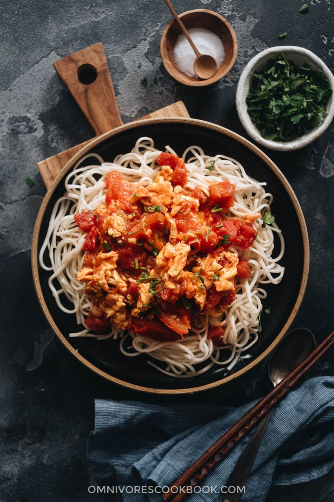

Tomatoes and Egg Noodles

Chinese Home Cooking Comfort Food
Tomatoes and Eggs is a basic idea in Chinese home cooking that has a lot of variations. Sometimes it's plopped on top of noodles, sometimes it's served on top of rice. Sometimes it's soupy, sometime's it's more chunky. Different regions, households, etc. will have slightly different flavor profiles. I had a roommate once that was also Chinese and we'd cook together sometimes. One time we tried making tomatoes and eggs. Bad choice. No I don't want sugar in it and the eggs shouldn't be silky, I don't care how your aunt did it.
This is more or less how my mom did it. Typically it was just one quick dish she'd whip up to serve with 3 or 4 others that we'd eat with rice. I do like this stuff with rice, reheating it in the microwave is quintessential comfort eating. But my favorite way to prepare it is with noodles.
Ingredients (per serving)
- 1 large (or 2 smaller) tomatoes per person
- Equal volume of eggs. So 2 or 3 eggs per person? Depends on how big the eggs are
- Your preferred noodle of choice. I like these udon noodles I can get at hmart
- whatever cooking oil you use, salt
All of the following are optional
- A clove of garlic or so. Depends on how garlicy you want it.
- Some scallions
- Toasted sesame oil
- White pepper powder (but this isn't actually optional)
Steps
- Get some water boiling and start cooking your noodles while you do the below steps. Obviously remove the noodles to your serving bowl once they're done.
- Scramble the eggs. Beat them well first, get the pan pretty hot and don't move them too much when you pour it in the hot pan. Let the scramble get big curds and overcook it until it's rubber.
- Chop the tomatoes up into say, half inch to 1 inch chunks? The smaller you cut them the less long it'll take for them to cook down.
- Remove the eggs from the pan, set them aside and get the tomatoes started on medium high heat.
- While the tomatoes are cooking down, peal smash and roughly chop up some garlic cloves. You can also slice up the white parts of the scallion and toss that into the tomatoes. Just move the tomatoes around every so often and they won't burn.
- Once the tomatoes have more or less broken down and are just boiling their own juices, put the eggs back in and season to taste. Should be a little bit overseasoned since you're seasoning your noodles also. Use a lot of white pepper
- Final consistency should be like a chunky sauce. Dump the tomato-egg gravy on top of your noodles. Sprinkle the green parts of the scallions over it. Give it a dash of sesame oil (and get a good whiff of that good stuff from the bottle). Add more white pepper.